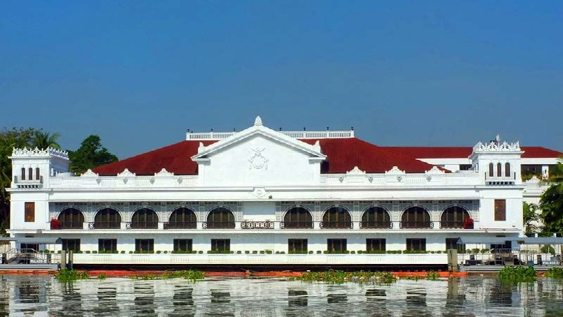
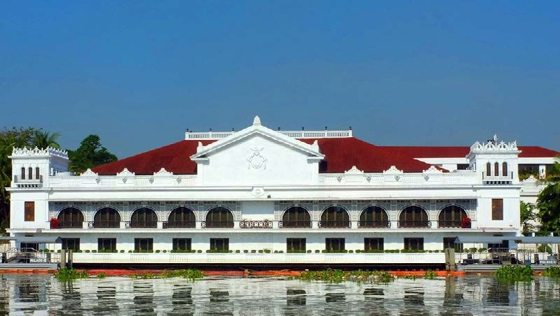
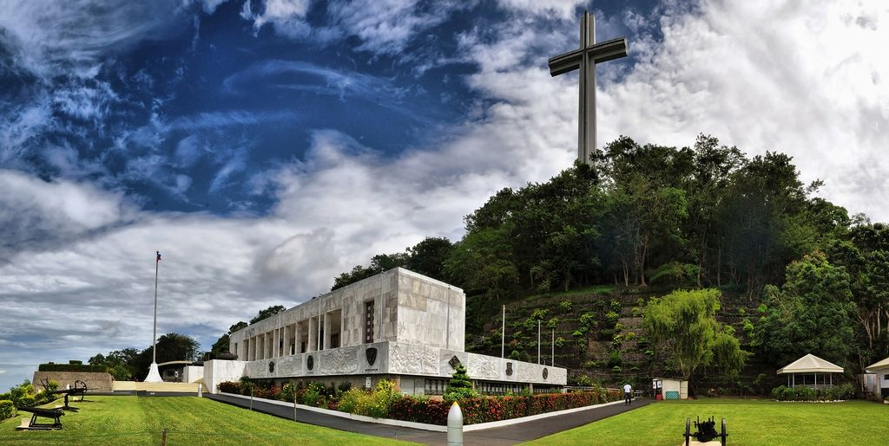
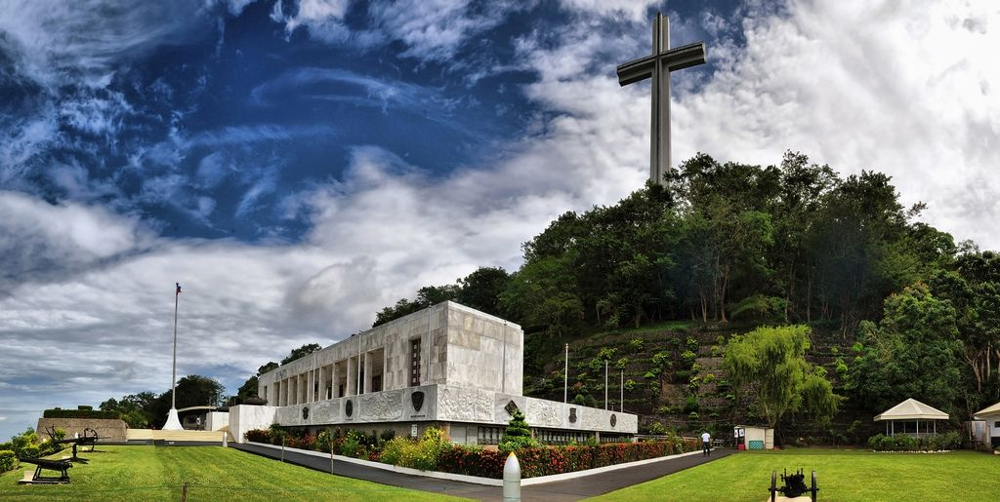

About Us
Welcome to our Historical Website — a place where the past comes alive.
We are dedicated to preserving and sharing the rich cultural heritage of the Philippines.
From timeless architecture to unforgettable events, our mission is to inspire curiosity and appreciation for history.
Through our gallery, stories, and travel guides, we invite you to explore the legacy of our ancestors
and carry forward the wisdom of the past into the future.


 



 
